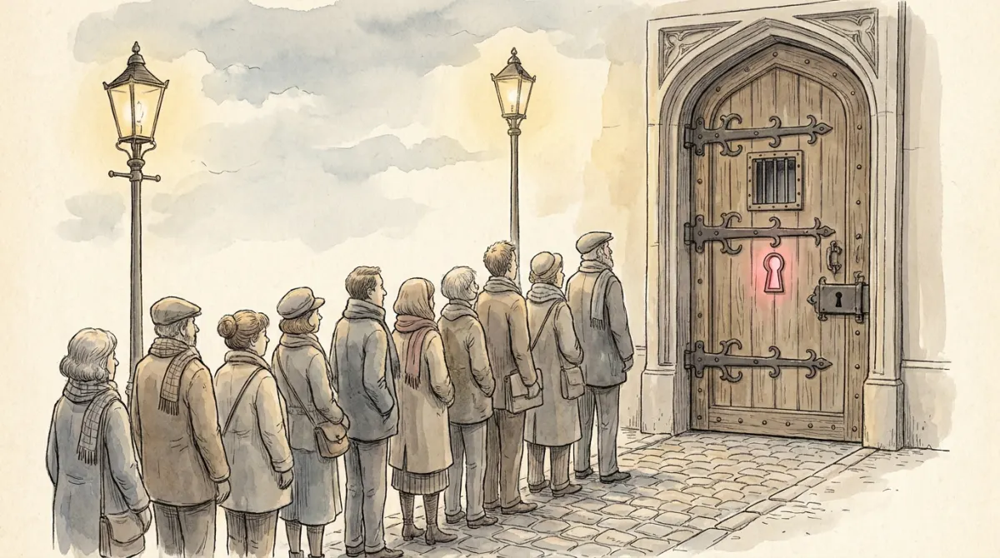

Back to the club from Poli-03, but tonight the committee room's door is locked from the inside. Meetings still happen; sometimes ballots are even handed around the corridor. But one thing never happens: the people in the room never leave it because of a vote. That is the course's core criterion. An authoritarian regime is defined by no turnover in power of the executive: the absence of meaningful elections, rule representing a section of the population, power originally taken rather than granted.
First warning, straight from the slides, in Barbara Geddes' words: "different kinds of authoritarian regimes differ from each other as much as they differ from democracy." Autocracy is not just "democracy with a minus sign"; the locked rooms differ wildly in living standards, corruption, repression, even competence. This lesson is a field guide to the varieties.
Historically the locked room is the default: autocracy dominated for centuries, peaking in the 1920s and 30s with a new, more ambitious model that needed its own name. Which brings us to the exam's favorite pair.
After World War II, scholars (Hannah Arendt above all) drew a line inside the locked room, and the exam tests this line relentlessly.
| Totalitarian regime | Authoritarian regime | |
|---|---|---|
| Ambition | transform human nature itself; full control over society and every corner of private life | stay in power; that is the whole program |
| Ideology | central and obligatory: indoctrination at school, total ownership of media and arts, the regime determines truth | thin or decorative; leaders care much less about what you believe |
| Participation | demanded: mass rallies, youth movements, personality cult; enthusiasm is compulsory | not wanted: stay home, stay quiet, leave politics to us |
| Fear | arbitrary terror via secret police: anyone can be next, guilt not required | targeted repression: predictable rules about what gets punished |
| Pluralism | none: no civil liberties, no political rights, no independent anything | limited pluralism: some competition and social spaces survive under a ceiling |
The memory hook: a totalitarian regime wants your soul (what you believe, whom you love, what is true); an authoritarian regime wants the chair, and will trade you your private life for political silence. Nazi Germany and Stalin's USSR versus a garden-variety military regime. On an MCQ, the words mass mobilisation, total ideology, arbitrary terror, personality cult all point totalitarian; limited pluralism, demobilised population point authoritarian.
Categorical typologies classify locked rooms by who rules and how: the leader's strategy and the regime's institutional structure. Barbara Geddes' list, the course standard:
| Personalist | One individual owns the regime: loyalty flows to a person, not an institution. Institutions are furniture. (Eritrea under Isaias Afewerki is the slides' example.) |
|---|---|
| Single-party | One party is the state's skeleton: careers, promotions, and succession all run through it. Historically the most durable and best-performing type. |
| Military | The armed forces rule as an institution: juntas, councils of officers. Often short-lived; the barracks eventually call the soldiers home. |
| Absolute monarchy | A royal family rules by dynastic right: succession is the family's business. |
| Hybrids | Mixtures of the above (a personalist leader inside a single-party shell is common). |
Why the typology matters beyond naming: the types perform differently. One-party regimes tend to grow economies and contain corruption better than personalist ones, and they survive longer. Knowing who holds the key predicts how the room behaves.
Now the grey zone from Poli-03's dimmer, taken seriously. Most autocracies today are not sealed rooms: they hold elections. Real ballots, multiple parties, campaigns, sometimes even genuine uncertainty at the margins. The course's names: hybrid regimes or electoral autocracies, and the sharpest concept, Levitsky and Way's competitive authoritarianism, defined on the slides in words worth keeping:
Picture a football match where one team also employs the referee, owns the stadium lights, and drafts the other team's schedule. A match genuinely happens; the outcome is genuinely not in equal play. Elections are free of massive fraud, yet incumbents exploit state resources, media control, and legal harassment until losing becomes nearly impossible. The slides' contemporary tendency list: Nicaragua, Venezuela, Russia, Turkey, all sliding from hybrid toward plain autocracy.
Once on MCQs (spot the definition), once in open answers about autocratization: today's road to autocracy usually runs through competitive authoritarianism, not around it. Poli-07 adds the voter's-eye view: whether voting in such elections still has democratic value.
Why do some locked rooms last seventy years while others fall in a season? The study of durability moved through two generations. The classic argument (Arendt's era): the masses are the great threat, so control them with terror and propaganda. The second-generation argument, now standard: the elites are the great threat. Dictators are rarely toppled by crowds; they are toppled by their own generals, party barons, and ministers. Coup-proofing, not crowd control, is job one.
The toolbox the course lists, four tools every durable regime mixes:
Do autocracies perform worse by definition? The honest answer the course gives: variance. The growth list includes China, Vietnam, Singapore, South Korea and Taiwan (in their authoritarian decades), Qatar; the disaster list includes Venezuela, DRC, Chad. Natural resources, colonial legacies, and corruption explain much of the spread, and regime type matters: one-party regimes outperform personalist ones on growth and corruption. Some autocracies enjoy genuine popular support, a fact that will return uncomfortably in Poli-13's trust data.
The trend section is the exam's favorite paragraph in this lecture. Today's autocracies are less repressive and more co-optive than their ancestors, almost all of them hold elections, and above all they tend to be born differently: not from a midnight seizure of power but from autocratization, the slow erosion of democratic institutions from within: an elected executive gradually gaining power over the other branches, plus creeping electoral manipulation. The climate helps them: autocratization has been rising since the end of the Cold War, and the international environment (Poli-12's contested liberal order) is friendlier to autocrats than it has been in decades.
Totalitarian or authoritarian? Which Geddes type? The reflex the MCQs test:
| Core criterion | no turnover in executive power; no meaningful elections; rule for a section of the population |
| Geddes' warning | autocracies differ from each other as much as from democracy |
| Totalitarian | total ideology, mass mobilisation, arbitrary terror, personality cult, zero pluralism (wants your soul) |
| Authoritarian | goal is staying in power; limited pluralism; demobilised society (wants the chair) |
| Geddes types | personalist · single-party · military · absolute monarchy · hybrids |
| Competitive authoritarianism | democratic institutions are the real route to power BUT incumbents' abuse of the state skews the field (Levitsky & Way) |
| Durability toolbox | repression · legitimacy · co-optation · exploited democratic institutions |
| Biggest threat | classic view: the masses; modern view: the elites (coups, defections) |
| Autocratization today | slow erosion from within: executive aggrandizement + electoral manipulation, rising since the Cold War |
| Performance | huge variance; one-party > personalist on growth and corruption |
One locked door, four kinds of keyholder, four tools to keep it shut, and a modern habit of locking it slowly, in full view.
Six questions in the written test's style.